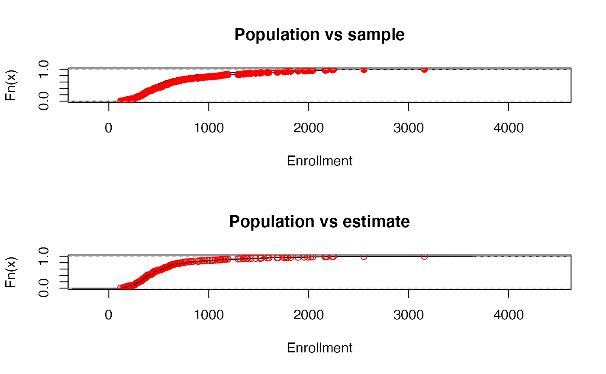

svycdf.RdEstimates the population cumulative distribution function for specified
variables. In contrast to svyquantile, this does not do
any interpolation: the result is a right-continuous step function.
one-sided formula giving variables from the design object
survey design object
remove missing data (case-wise deletion)?
other arguments to plot.stepfun
object of class svycdf
a vector of x-axis labels or NULL for the default labels
An object of class svycdf, which is a list of step functions (of
class stepfun)
data(api)
dstrat <- svydesign(id = ~1, strata = ~stype, weights = ~pw, data = apistrat,
fpc = ~fpc)
cdf.est<-svycdf(~enroll+api00+api99, dstrat)
cdf.est
#> Weighted ECDFs: svycdf(~enroll + api00 + api99, dstrat)
## function
cdf.est[[1]]
#> Step function
#> Call: svycdf.default(formula = ~enroll, design = dstrat)
#> x[1:187] = 119, 143, 153, ..., 2552, 3156
#> 188 plateau levels = 0, 0.0024378, 0.0095754, ..., 0.99756, 1
## evaluate the function
cdf.est[[1]](800)
#> [1] 0.8223603
cdf.est[[2]](800)
#> [1] 0.8463626
## compare to population and sample CDFs.
opar<-par(mfrow=c(2,1))
cdf.pop<-ecdf(apipop$enroll)
cdf.samp<-ecdf(apistrat$enroll)
plot(cdf.pop,main="Population vs sample", xlab="Enrollment")
lines(cdf.samp,col.points="red")
plot(cdf.pop, main="Population vs estimate", xlab="Enrollment")
lines(cdf.est[[1]],col.points="red")

par(opar)